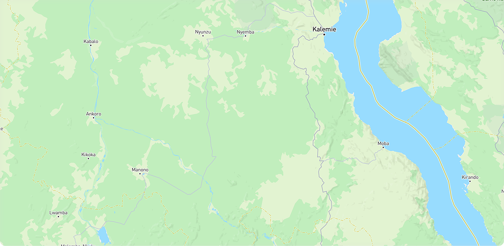

Engagement Status
Applicant
Stage
Evaluation
Score
Watchlist Mentions
0
Red Flags
1
Identified UBOs
2
Locations

Primary Location ×
- Name
- Northbank Facility
Associated Location ×
- Name
- Eastfield Depot
- Type
- Facility
- Link
- Operator
Key Information
Country
Legal Form Private Company
Primary Location Northbank Facility
Associated Locations 214
Governance
Assessment Details
Total Checks22
Red Flags0
Triangulation70%
Compliance
Trade Relationships
Information Access Performance